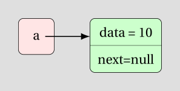
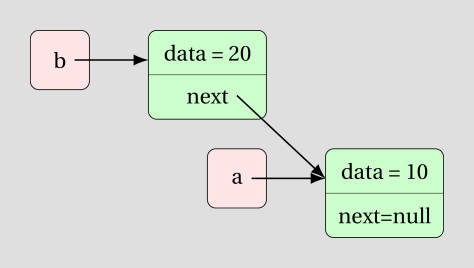
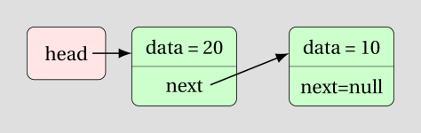
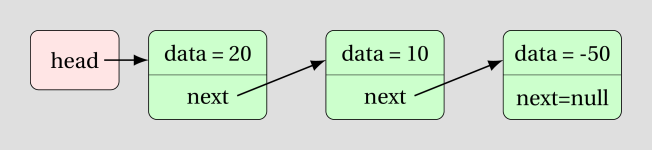
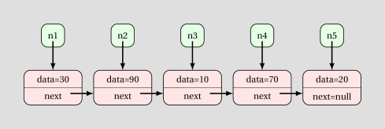
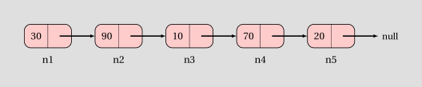
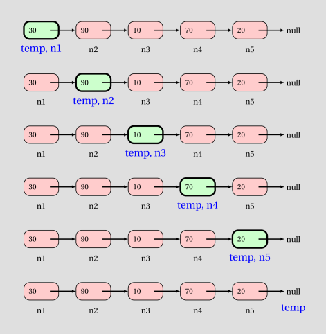
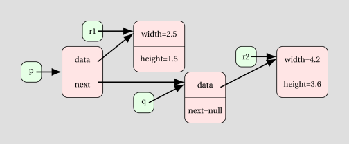
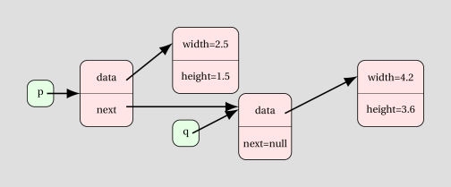

Recursive data structures
Learning Outcomes
- Be able to create and operate on a class holding one or more references of the same type
Author: Gaurav Gupta
The Node class
Consider the following class:
public class Node {
public int data;
public Node next;
public Node(int d, Node n) {
data = d;
next = n;
}
}
Every Node object holds a reference to another Node object.
Node a = new Node(10, null);
Node b = new Node(20, a);
Node head = new Node(20, new Node(10, null));
Here, we created an anonymous Node object - new Node(10, null) - and passed it as a parameter to the constructor of head.
head.next.next = new Node(-50, null);
Linking nodes
We can link any number of nodes as we want.
Node n5 = new Node(20, null);
Node n4 = new Node(70, n5);
Node n3 = new Node(10, n4);
Node n2 = new Node(90, n3);
Node n1 = new Node(30, n2);

Simplified representaton:

We can get all the values just using n1 :)
System.out.println(n1.data); //30
System.out.println(n1.next.data); //90
System.out.println(n1.next.next.data); //10
System.out.println(n1.next.next.next.data); //70
System.out.println(n1.next.next.next.next.data); //20
If we create a Node reference temp initialized to n1, we can re-reference it to the Node after it using temp = temp.next. Thereby, repeating the operation over and over.
Node temp = n1; //temp refers to same instance as n1
temp = temp.next; //temp refers to node after temp or n1 which is n2
temp = temp.next; //temp refers to node after temp or n2 which is n3
temp = temp.next; //temp refers to n4
temp = temp.next; //temp refers to n5
temp = temp.next; //temp is now null - STOP
Abstracting into a loop to add all the values:
Node temp = n1;
int total = 0;
while(temp != null) {
total = total + temp.data;
temp = temp.next;
}

Nodes can hold other objects too
In the previous example, we saw a node holding integer data, but it can hold any kind of data. For starters, take a look at RNode holding Rectangle object.
For the classes defined in,
Consider the following code,
Rectangle r1 = new Rectangle(2.5, 1.5);
Rectangle r2 = new Rectangle(4.2, 3.6);
RNode q = new RNode(r2, null);
RNode p = new RNode(r1, q);

We can create anonymous objects to reduce variable count.
RNode q = new RNode(new Rectangle(4.2, 3.6), null);
RNode p = new RNode(new Rectangle(2.5, 1.5), q);

Homework - 2
Task 1
For the class Node, draw the memory diagram to illustrate objects after the last statement of the following code executes.
Node a = new Node(20, null);
Node b = new Node(70, a);
Node c = new Node(10, a);
Node d = new Node(90, c);
Task 2
For the class Node, draw the memory diagram to illustrate objects after the last statement of the following code executes.
Node a = new Node(20, null);
Node b = new Node(70, a);
Node c = new Node(10, b);
Node d = new Node(90, c);
a.next = d;
Task 3
For the class Node, draw the memory diagram to illustrate objects after the last statement of the following code executes.
Node a = new Node(20, null);
Node b = new Node(70, a);
Node c = new Node(10, b);
Node d = new Node(90, c);
a.next = d.next;
Task 4
For the class Node, draw the memory diagram to illustrate objects after the last statement of the following code executes.
Node a = new Node(20, null);
Node b = new Node(70, a);
Node c = new Node(10, b);
Node d = new Node(90, c);
a.next = d.next.next;
Task 5
For the class Node, the following code attempts to store the sum of all items in the chain of nodes into a varaible total. However, it has a a bug. Briefly explain what is the problem with the code, and correct it.
Node a = new Node(20, null);
Node b = new Node(70, a);
Node c = new Node(10, b);
Node d = new Node(90, c);
int total = 0;
Node current = d;
while(current != null) {
total = total + current;
current = current.next;
}
Task 6
For the class Node, the following code attempts to store the number of nodes in the chain into a variable size. However, it has a a bug. Briefly explain what is the problem with the code, and correct it.
Node a = new Node(20, null);
Node b = new Node(70, a);
Node c = new Node(10, b);
Node d = new Node(90, c);
int size = 0;
Node current = d;
while(current != null) {
size = size + 1;
}
Task 7
For the class Node, what is the value of result after the following code is executed?
Node a = new Node(20, null);
Node b = new Node(70, a);
Node c = new Node(10, b);
Node d = new Node(90, c);
int result = 0;
Node current = d;
while(current != null) {
if(current.data >= 20) {
result = result * 10 + 1;
}
else {
result = result * 10;
}
current = current.next;
}
Task 8
For the class Node, what is the value of result after the following code executes?
Node a = new Node(9, null);
Node b = new Node(2, a);
Node c = new Node(7, b);
Node d = new Node(1, c);
a.next = d;
a.data = 1000*d.data +
100*d.next.data +
10*d.next.next.data +
1*d.next.next.next.data;
Task 9
Consider the following class definition for TreeNode:
public class TreeNode {
public int data;
public TreeNode left, right;
public TreeNode(int d, TreeNode l, TreeNode r) {
data = d;
left = l;
right = r;
}
}
Draw the memory diagram to illustrate objects after the last statement of the following code executes. Also, state the number of instances and references in the diagram.
TreeNode t1 = new TreeNode(20, null, null);
TreeNode t2 = new TreeNode(-10, null, null);
TreeNode t3 = new TreeNode(70, t1, t2);